掌機 - FC3000 - 嘗試解析電流聲問題
參考資訊：
https://whycan.com/t_6647.html
https://www.ti.com/lit/ds/symlink/lm4890.pdf?ts=1649426381256
依據網友測試，發現電流聲音跟LCD背光設定有關係，只要將LCD背光亮度調到100%，就不會有電流聲音，於是，司徒看一下PCB線路，發現聲音輸出是走在LCD背光電路旁邊
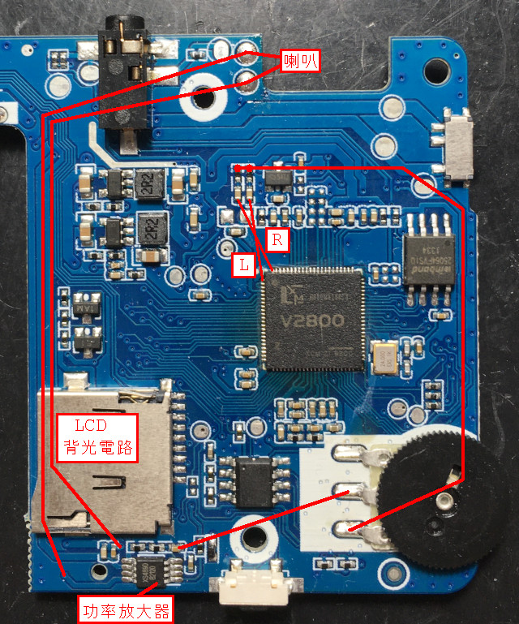
LCD背光使用PWM方式控制，亮度在100%時，輸出固定維持在高電位狀態，因此，不會有干擾的狀況發生，這也是為何原廠系統是固定在此亮度的原因
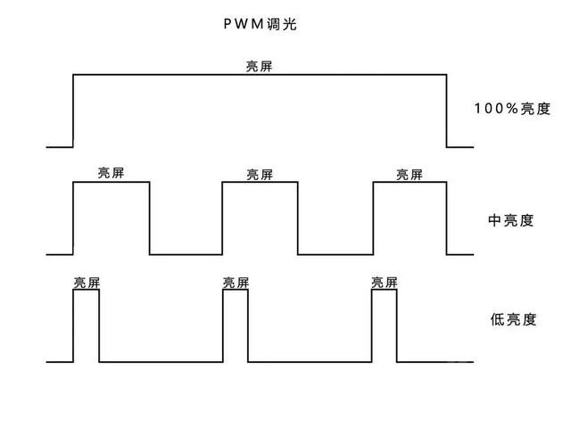
XS4890(LM4890)腳位
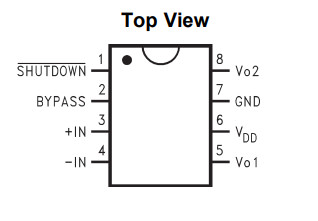
司徒看了一下PCB，發現FC3000使用的電路如下：
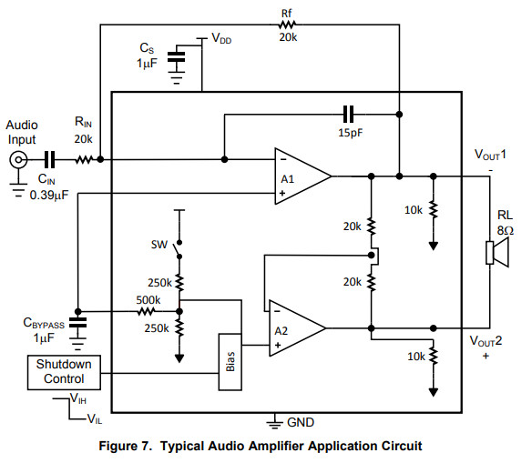
雖然目前看來，應該是輸出遭到EM干擾所造成的問題，不過，如果是輸入源遭到干擾，可以考慮改造成差分放大電路
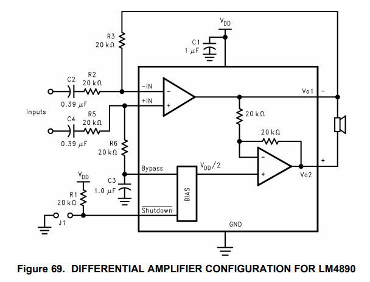
解法，大約有幾個思路：
軟體思考：
1. 可以依據LCD背光的頻率，疊加對應的波形，類似主動式噪音消除法，可以在聲音驅動實作
硬體思考：
1. 將啦叭輸出線路切斷(PCB)，使用外圍有接地包覆的線材取代
2. 使用鐵片包覆LCD背光電路並且將鐵片接地
3. 將喇叭移到下方
接著司徒開始嘗試解決噪音問題，首先，標注相關線路
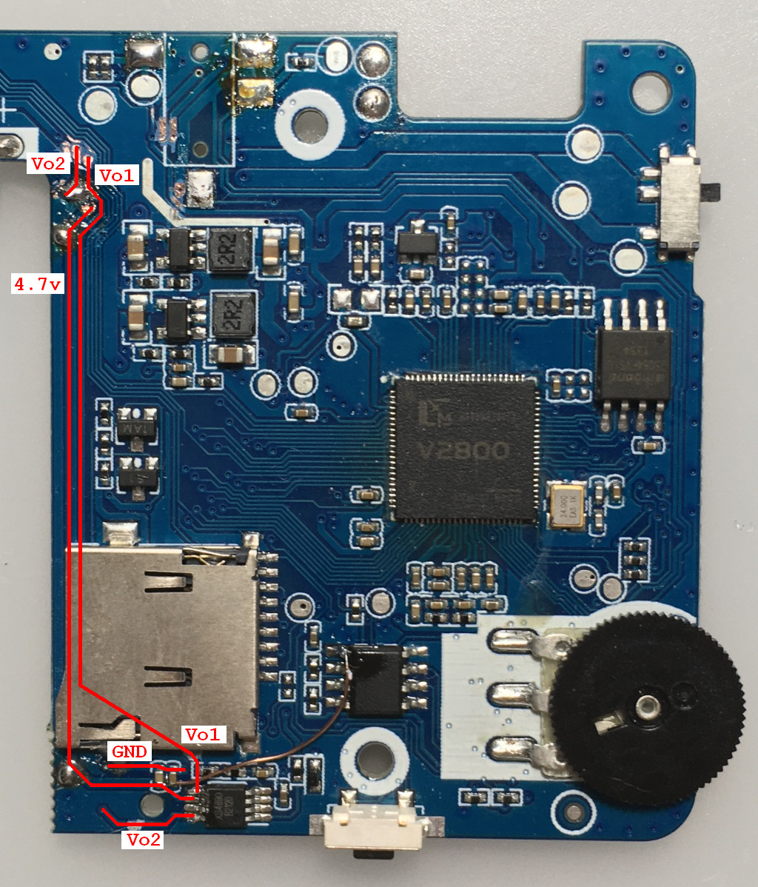
背面
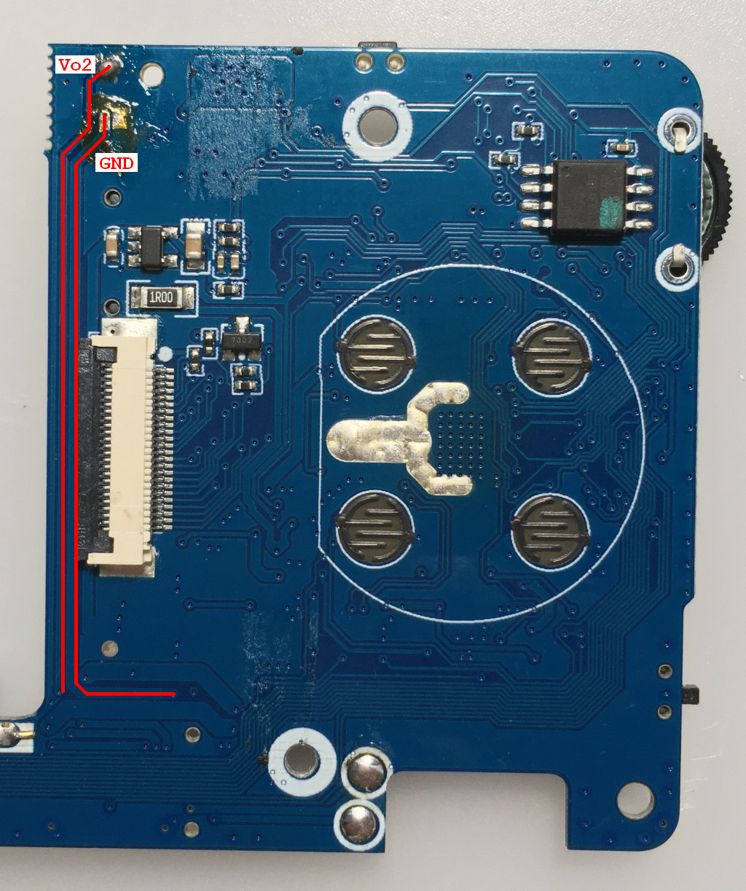
1：Vo2割斷，下半部份接地
2：Vo1割斷，下半部份接地
3：Vo2、Vo1、GND接在一起
4：4.7v割斷
5：4.7v下半部份接地
6：4.7v下半部份接地
7：GND接MicroSD的GND(這個可以省略)
8：Vo1割斷
9：Vo2割斷
LM4890第5腳接喇叭
LM4890第6腳連接到加密IC第一腳位3.3V
LM4890第8腳接喇叭
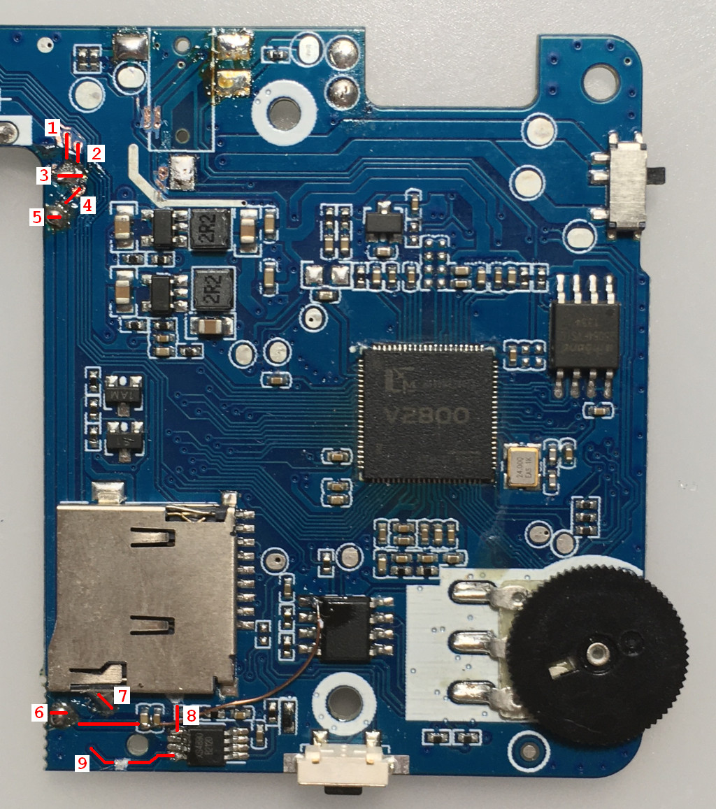
Vo2下半部份接地
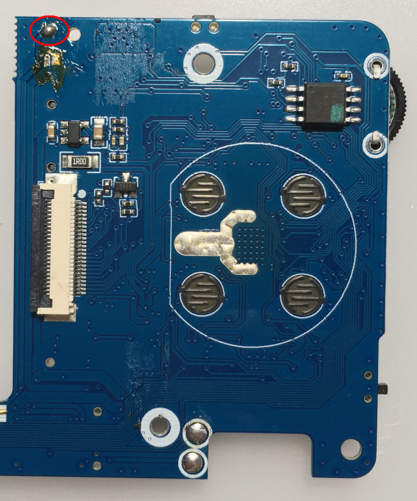
連接示波器量測訊號(需要掛上喇叭負載)
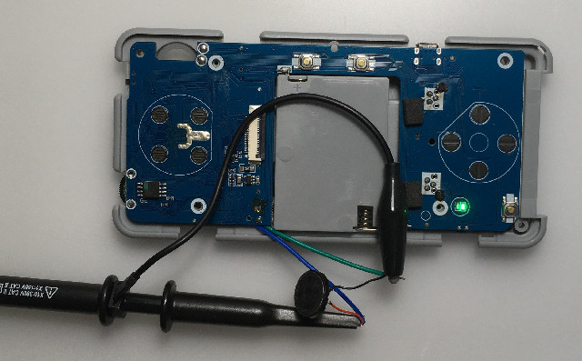
官方系統開機後，量測的喇叭訊號
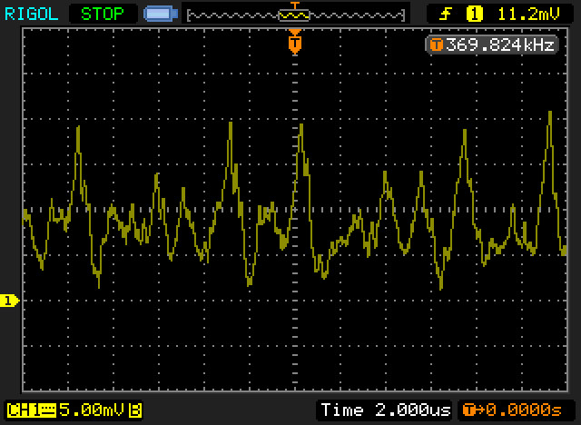
OD系統開機後，量測的喇叭訊號(4.7v割斷，但是沒有接地)
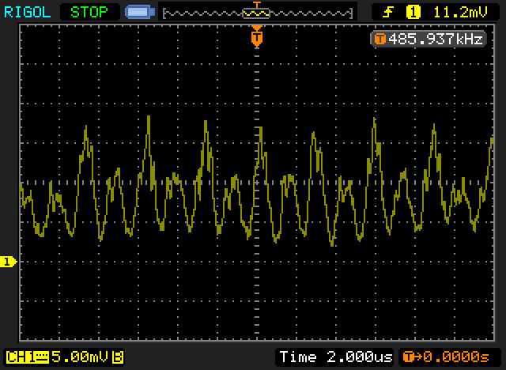
OD系統開機後，量測的喇叭訊號(4.7v割斷，餘線部份接地)
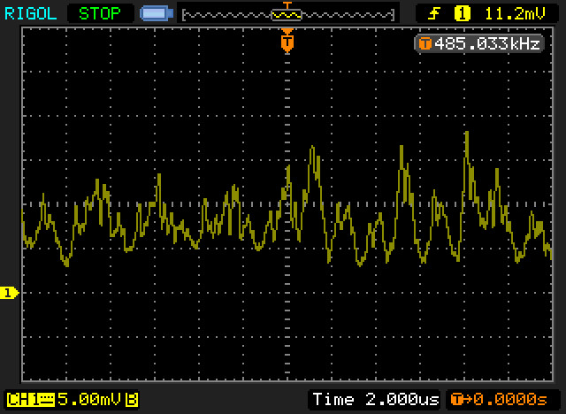
從量測到的訊號，可以發現4.7v那根線是一個關鍵性的影響，因為有一個很穩定影響波形，這個波形應該就是LCD背光震盪電路，因此，玩家也可以先從4.7v割斷開始改造，目前司徒測試改造後的電流聲音，已經跟原廠系統幾乎一樣